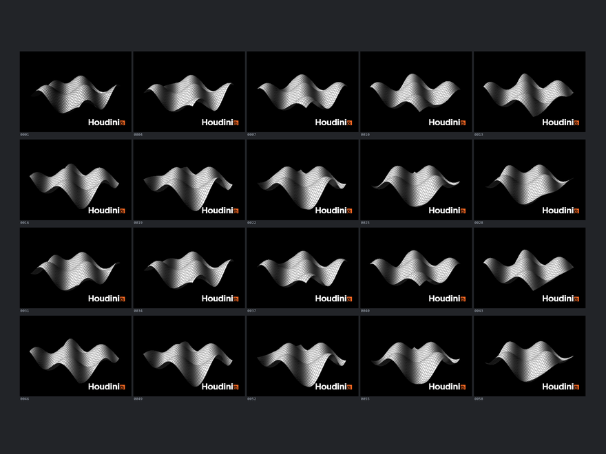
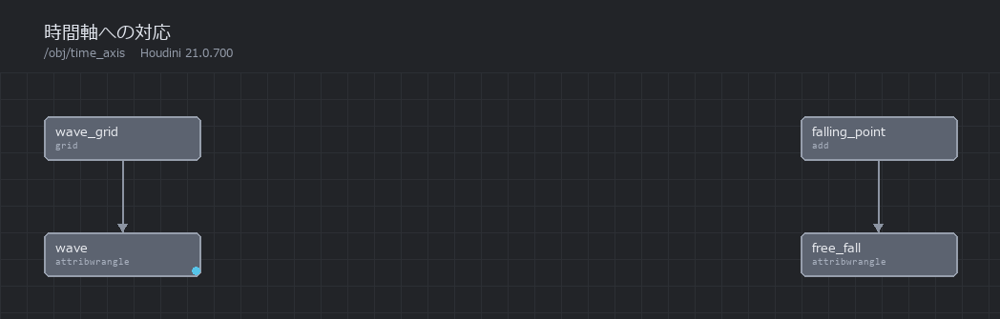

013
ツール

同じ連番から作ったGIF。HTMLでは動きをそのまま見せられる。

コンタクトシート。PDFには動きを載せられないので、全コマを1枚に並べてフレーム番号を振る。
時間軸への対応 — フレームを進めて記録する
要点
- 連番の仕組みは正しい。自由落下の式との差は最大 0.0000006 で、これは小数の計算精度そのもの。
- 20枚の書き出しに 1.18秒（1枚59ミリ秒）。60フレーム全部でも3.5秒程度で、の重さは問題にならない。
- カメラは全フレームを覆う範囲で一度だけ決める。 フレームごとに枠を合わせ直すと、対象が動いているのか大きさが変わっているのかを画から判断できなくなる。

全文を読む約2分
/obj/time_axis · 20コマ書き出し
シーンファイル013_time.hipnc
ノードのつなぎ方を見る

ここまでの12実験はすべて1だけを見ていた。 は時間変化そのものが結果なので、フレームを進めて連番で書き出す仕組みが要る。 仕組みが正しいかは、答えが分かっている動き（自由落下の式）で確かめた。
検証: 自由落下の式と一致するか
| フレーム | 経過秒 | 測った高さ | 理論値 | 差 |
|---|---|---|---|---|
| 1 | 0.0000 | 20.00000 | 20.00000 | 0.0000000 |
| 10 | 0.3750 | 19.31094 | 19.31094 | 0.0000004 |
| 20 | 0.7917 | 16.92899 | 16.92899 | 0.0000002 |
| 30 | 1.2083 | 12.84566 | 12.84566 | −0.0000005 |
| 40 | 1.6250 | 7.06094 | 7.06094 | −0.0000006 |
シミュレーション関連ノードがどこにあるか
| 対象 | キーワード | SOP にある数 | DOP にある数 |
|---|---|---|---|
| パーティクル | pop | 0 種 | 67 種 |
| 剛体（破壊） | rbd | 47 種 | 21 種 |
| 布 | vellum | 22 種 | 7 種 |
| 煙・炎 | pyro | 14 種 | 3 種 |
| 液体 | flip | 8 種 | 4 種 |
わかったこと
- 連番の仕組みは正しい。自由落下の式との差は最大 0.0000006 で、これは小数の計算精度そのもの。
- 20枚の書き出しに 1.18秒（1枚59ミリ秒）。60フレーム全部でも3.5秒程度で、の重さは問題にならない。
- カメラは全フレームを覆う範囲で一度だけ決める。 フレームごとに枠を合わせ直すと、対象が動いているのか大きさが変わっているのかを画から判断できなくなる。
- 出力は2形式にした。PDFには動きを載せられないので、HTMLにはGIF。同じ連番から両方を作る。
- パーティクルは に1つもない（0種）。 すべて 側（67種）。SOPをつなぐだけでは始められず、DOPを組む必要がある。
- 一方で剛体は SOP に 47種、布は 22種ある。SOPレベルのラッパーが充実している分野の方が入口として易しい。 当初はパーティクルから始める予定だったが、 か から入る方が理にかなっていると分かったので順番を変える。
solverSOP はロックされたアセットで、中を触るにはallowEditingOfContents()が要る。しかも中身は dopnet と4つの null で、想像していた単純な構造ではなかった。- そのため今回の自由落下は数式で書いており、これはではない（前のフレームの結果を使っていない）。本物のシミュレーションは次から。